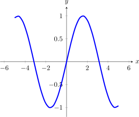

In the last section, we showed you how to include images using includegraphics.
However, the preferred method to include graphics is with TikZ.

We can create the image above with the following code:
\begin{image}
\begin{tikzpicture}
\begin{axis}[
xmin=-6.4,
xmax=6.4,
ymin=-1.2,
ymax=1.2,
axis lines=center,
xlabel=$x$,
ylabel=$y$,
every axis y label/.style={at=(current axis.above origin),anchor=south},
every axis x label/.style={at=(current axis.right of origin),anchor=west},
]
\addplot [ultra thick, blue, smooth] {sin(deg(x))};
\end{axis}
\end{tikzpicture}
\end{image}
We can embed YouTube Videos with
\youtube{FvgF95i0_lw} which would embed the video into the page, like this:
The easiest way to include an interactive graph is to use the \graph command.
Unfortunately, the \graph command doesn’t draw a graph in the PDF, rather, it
states (in words) that a graph is produced.
There are a number of options for the
\graph command, and you can find out more WHERE? Here are two examples. One
with axis labels and a set window:
and another, piecewise function:
If you require further features from Desmos, you can sign up for an account and include your worksheets like this:
\begin{center}
\desmos{zwywds7med}{800}{600}
\end{center}
Desmos3D and GeoGebra work in similar ways, with:
generated by
\begin{center}
\desmosThreeD{bb4exrhrl3}{800}{600}
\end{center}
and
generated by:
\begin{center}
\geogebra{XC3FXUdJ}{800}{600}
\end{center}
And remember the definition of the absolute value.
2025-01-11 20:58:26